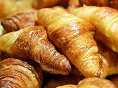
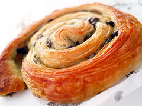
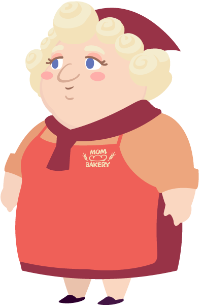

おすすめのパン

サクサククロワッサン

レーズンデニッシュ

こだわり麦パン
毎日8:00、12:00、15 :00に焼きたてのパンをご用意してお待ちしております。

1725年にフランスから来たサラ・オートゥイユが、ホープタウン時計台の前で小さな屋台を
使ってクロワッサンを売り始めたのがMom's Bakeryの始まりです。
現在の店長マーサで12代目となりますが、一番人気の石窯で焼いたサクサククロワッサンは営業当時の味を焼く300年守り続けています。
毎日8:00、12:00、15 :00に焼きたてのパンをご用意してお待ちしております。